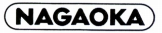
NAGAOKA（ナガオカ）/JEWELTONE（ジュエルトーン）
1940年に長岡時計用部品製作所として設立、商号を1950年に長岡精機宝石工業株式会社、1971年に株式会社ナガオカとしたアナログレコードの交換針で有名なブランド。1990年には製造・販売の部門がそれぞれ独立し、製造部門が�潟iガオカ・
�潟iガオカ精密として、また販売部門が�潟iガオカトレーディングとなっている。
オーディオ関連では現在（2018年4月時点）でも国産メーカーを中心に各社のアナログディスクプレーヤー・カートリッジの交換針の供給を続けており、自社名でもカートリッジ等を供給ししている。ただし現在の「�潟iガオカ」はかつての会社の主力工場だった山形ナガオカが業務を引き継ぎ社名を変更したもののようだ。なお「ジュエルトーン」は当初はリボン型カートリッジなど高級機用のブランドであったが、その後、製品全般に使われるようになった。しかし、現在では使われていない。
�T.カートリッジ
このブランドのカートリッジの最大の特徴は、最上位機種にMC型の変形ともいえるリボン型を開発したことである。またIM（インデュース・マグネット）型の一種であるMP（ムービング・パーマロイ）型カートリッジを、現在まで作り続ける希有なブランドである。
�@リボン型
リボン型はMC型のコイルを極端に短くし、1本のリボン状の線にしたものと表現されることが多い。当然出力電圧は低いが簡素な構造は高い変換忠実性を生むとされた（＊）。初代のNR-1はナガオカブランドだが2世代目以降はジュエルトーンブランドでの発売。なお詳細は不明だが、初代のNR-1と二代目のJT-R�Uには交換針が用意され、三代目のJT-R�Vからは、一般的なMC型と同様の本体交換になっている。
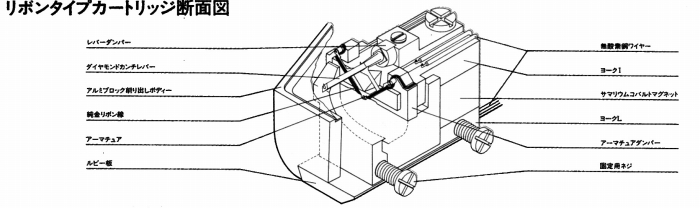
＊リボン型カートリッジの優位点
ナガオカによれば、MM型や大部分のMC型カートリッジは交流磁束を利用した発電形式で、直線性のある発電は期待できないという。磁石や鉄芯入りコイルを動かす発電では、その動作は図1のようなヒステリシス・カーブという独自の曲線に支配される。現状のカートリッジは中央の直線に近い部分を利用しているが、マクロ的には直線に言えないという。さらにミクロ的な部分も、図2のように、バルク・ハウゼン効果という現象で、ノコギリの刃のようになっているそうだ。
さらに発電導体長を極端に短くすることで、インピーダンスを低く抑え、リード線のL成分やC成分の影響を全く受けず、超高域まで伝達ロスがないがないそうだ。
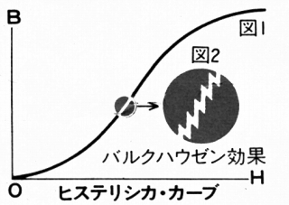
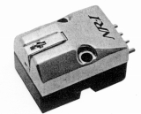
(NR-1)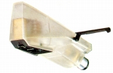
(JT-R�U）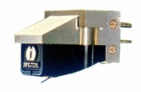
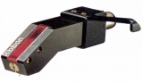
(左 JT-R�V 右 JT-R�V/D)�AMM型
製造コストがかかるリボン型はトップモデルに限定し、普及価格帯の製品はオーソドックスなMM型で構成した。しかし、MP型の登場で姿を消した。
(1)ナガオカの製品(〜1970年代前半）
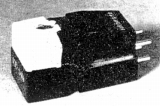
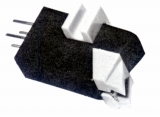
(左 NM-33 右 NM-66)NM-11 NM-22 NM-22E NM-33 NM-66
(2)ジュエルトーンの製品
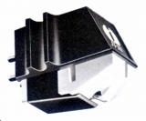
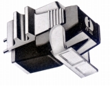
(左 JT-311 右 JT-555)(3)ナガオカの製品(1977年〜）
ジュエルトーンブランドスタート後、しばらくして再びナガオカブランドでカートリッジが発売された。旧製品とほぼ同じ型番だが、改良の有無は不明。なお高級路線としてジュエルトーンがあるせいか、従来よりも値下げ(例
NM-11=\4,600 → NM-11AS=\3,600)されていた。MPシリーズの登場で短命で終わった。
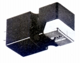
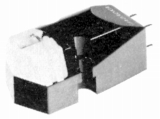
(左 NM-11AS 右 NM-22S)�BMP型
MP（ムービング・パーマロイ）型と呼ぶジュエルトーンのカートリッジ。コイル・磁石を固定し、カンチレバーに取り付けた誘導体で発電する、MI/IM型の一種である。誘導体が磁化したパーマロイであることが、タイプ名の由来。カンチレバーの背後に設置するのがマグネットより軽い磁化したパーマロイであることが、優位点だとしている。低価格のものから高級機まで幅広い価格帯のモデルがある。当サイトの資料では1990年代初頭で一旦途切れるが、現在では復活し、この時代の製品の後継モデルが「ナガオカ」名義で発売されている。
なおこの時期（1980年前後）のナガオカ/ジュエルトーンの大抵の製品は型番末尾に「J」がつく。時代により「J」がつかない個体もあるようだ。
(MP型構造図）
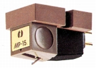
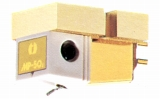
(左 MP-15J 右 MP-50J)MP-10J MP-11J MP-15J MP-20J MP-30J MP-50J
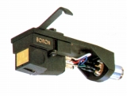
（MP-11E/B)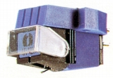
(JT-120)
�U.昇圧トランス
原理的にはコイルのターン数が極端に少ないMC型カートリッジがリボン型カートリッジ。初代のNR-1は専用トランス付属だった。2代目以降の専用トランスがRA-1である。
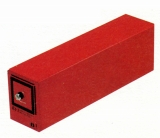
(RA-1)
�V.その他
ある意味でその他のアクセサリーはこのブランドの本業ともいえるもの。オーディオテクニカに匹敵する種類がある。なお特に断らないものは「ナガオカ」ブランドの製品である。
�@ヘッドシェル
�Aリード線
�C帯電除却器
�Fその他
スタイラスタイマー、水平器、ストロボマット、スタイラスミラー、針圧計、ドライバーセット